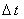
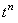
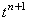
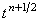
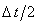
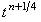

|
9.1. Методика записи уравнений схемы.
Рассмотрим ещё одну интерпретацию неявной разностной схемы (7.3),
позволяющую (как и в случае схемы переменных направлений) добиться повышения порядка аппроксимации
по времени, - схему предиктор-корректор.
Данная схема требует особого способа расщепления интервала 
(см. рисунок): интервал между точками
 и  на разностной сетке
расщепляется пополам (полученная промежуточная точка обозначена, как );
интервал  между точками
и снова расщепляется пополам (полученная промежуточная точка обозначена,
как ).
На первом полушаге интервала записывается неявная разностная схема,
в которой учитывается только производная второго порядка по координате x:
На втором полушаге интервала
записывается неявная разностная схема, в которой учитывается только производная второго порядка по
координате y:
Результатом последовательного решения подсхем (7.15), (7.16), называемых
в совокупности предиктором, являются значения функции u на шаге по времени (n + 1/2).
Для завершения расчётов на всём интервале используется поправочное разностное соотношение,
называемое корректором:
Таким образом, схема предиктор-корректор в случае двумерных задач состоит из трёх подсхем.
|